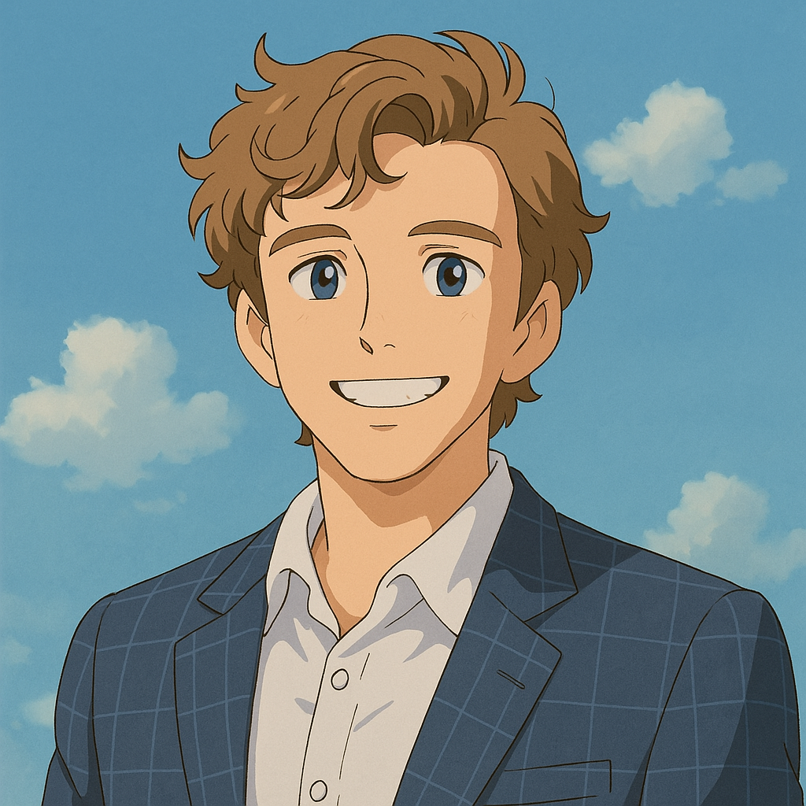

Hello, my name is Colin Angel!
I am a senior studying Electrical and Computer Engineering at UT Austin.
I am from Beaumont, Texas- oil country.
Some interesting facts about me:
- Funding young innovators at Lift Off Grant
- Incoming at Product Growth Team at Clipboard Health (Top YC Company)
- Built Natural- a mental health coach in your pocket (Backed by LeapYear at $2M Valuation)
- Supporting digital accessibility policy development in Madison, WI through Paragon
- Jr. SWE at Kira Learning
- Pitched to Bill Gurley (Lead Uber Investor)
- Completed Ironman triathlon at age 18. 2 IM, 2 HIM, and 5 marathons so far. Best course- Chicago
- Published guest columnist in The Beaumont Enterprise and The Texas Orator
- Estimated to have read >500 books in my lifetime
- Annualized returns of >20% for past 10 years, with 20X returns on some equities (started investing at age 10)
- Learned about business through car washing, selling on eBay, and making a gym product
- Internship at Gaya AI improving insurance workflows
- Was sent Apple merch from Tim Cook
- Built (and destroyed) a drone in middle school
- Tested Nike prototype high-performance running shoes (classified)
- Chocolate milk and presidential history enjoyer